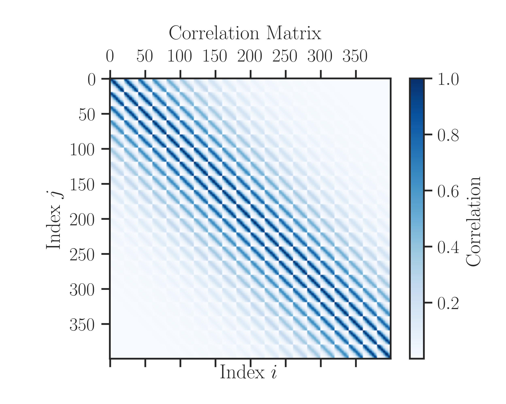
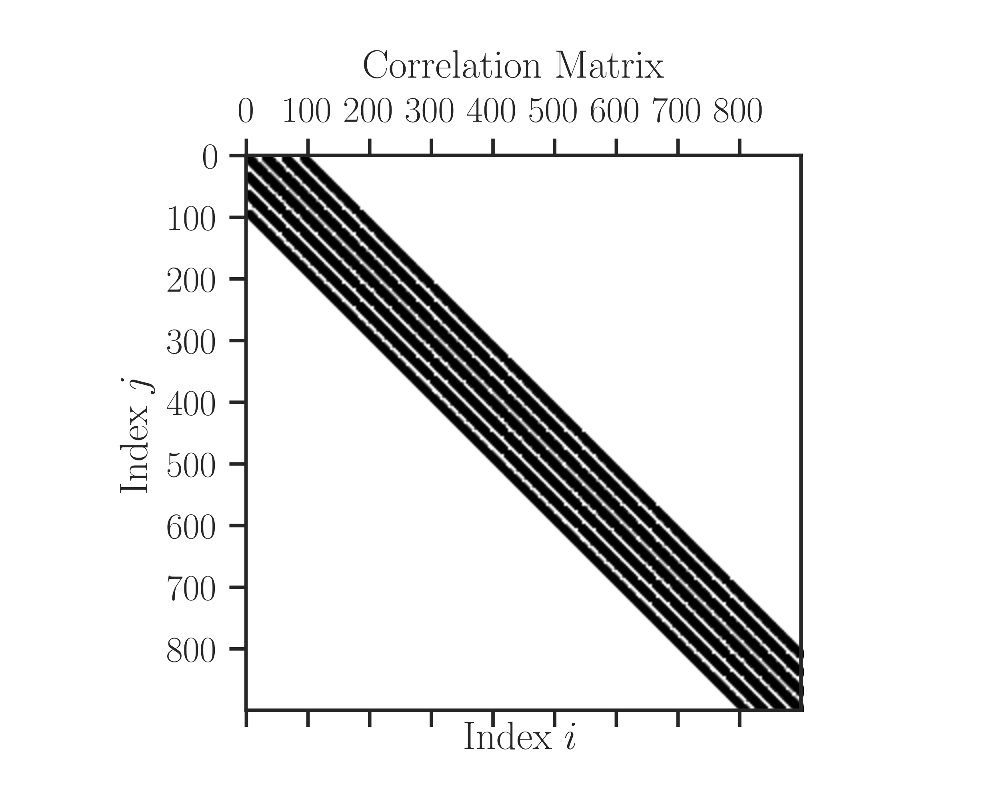

imate.correlation_matrix#
- imate.correlation_matrix(size=20, dimension=1, scale=0.1, kernel='exponential', kernel_param=None, grid=True, sparse=False, density=0.001, format='csr', dtype='float64', plot=False, verbose=False)#
Generate symmetric and positive-definite matrix for test purposes.
The elements of the correlation matrix are generated by the spatial correlation of a set of points. The set of points is either randomly generated in a hypercube or defined on a grid of points of a lattice in a hypercube. The correlation is computed by a kernel function applied to the Euclidean distance of the set of points.
- Parameters:
- sizeint, default=20
The size of matrix, which is determined as follows:
If
gridis False, the size of the matrix issize.If
gridis True, the size of the matrix issize**dimension.
- dimensionint, default=1
The dimension of the space of points to generate the correlation matrix.
- scalefloat, default=0.1
A positive parameter \(\rho\) of the correlation function that scales distance \(r\) to \(r/\rho\)
- kernel{‘matern’, ‘exponential’, ‘square_exponential’, ‘rational_quadratic’}, default=’exponential’
The kernel function of the correlation, which takes a distance \(r\) and yields its spatial correlation. See details in the Notes section below.
- kernel_paramfloat, default=None
Parameter \(\theta\) of the kernel function. This option only applies to
kernel=matern(see the parameter \(\nu\) in Notes below) andkernel=rational_quadratic(see the parameter \(\alpha\) in Notes below).- gridbool, default=True
Determines whether to generate the set of points on a lattice grid or to randomly generate points inside the unit hypercube.
If True, the points are generated on a structured grid in a unit hypercube with equal distances. In this case, the size of matrix (which is equal to the number of points) is
size**dimension.If False, the points are generated randomly. In this case, the size of the generated matrix is
size.
- sparsebool, default=False
Flag to indicate the correlation matrix should be a sparse or dense matrix. If set to True, you may also specify
density.- densityfloat, default=0.001
Specifies an approximate density of the non-zero elements of the generated sparse matrix. The actual density of the matrix may not be exactly the same as this value. This option is only relevant if
sparseis True.- format{‘csr’, ‘csc’}, default=’csr’
The format of the sparse matrix. CSR generates compressed sparse rows and CSC generates compressed sparse columns matrix.
- dtype{‘float32’, ‘float64’, ‘float128’}, default=’float64’
Data type of the matrix.
- plotbool, default=False
If True, the matrix will be plotted. If no display is available (such as executing on remote machines) the plot is saved in the current directory in SVG format.
- verbosebool, default=False
If True, it prints some information during the process.
- Returns:
- Anumpy.ndarray, scipy.sparse.csr, or scipy.sparse.csc, (N, N)
Correlation matrix.
See also
Notes
Matrix Size:
The size of matrix, \(N\), is determined by the parameter
sizewhich we refer to as \(n\), the dimension,dimension, which we refer to as \(d\), and the booleangridvariable.If
gridis True, then, the size of the square matrix is \(N = n^d\).If
gridis False, then, the size of the square matrix is \(N = n\).
Complexity of computation:
The complexity of computing the correlation matrix is \(\mathcal{O}(\frac{1}{2} N^2)\). The elements of the matrix are generated using shared memory parallelism using an efficient method that only requires \(\mathcal{O}(\rho N^2)\) memory where \(\rho\) is the density of the sparse matrix.
Warning
If \(N\) is large, it might take a long time to generate the correlation matrix.
Spatial Correlation:
The correlation matrix of size \(N \times N\) is generated by the mutual correlation of a set of \(N\) points in the unit hypercube, \(\boldsymbol{x}_i \in [0, 1]^d\). The correlation between each two points \(\boldsymbol{x}_i\) and \(\boldsymbol{x}_j\) is computed by
\[K_{i, j} = \kappa \left(r_{i,j} | \theta \right),\]where \(\kappa\) is a correlation kernel with the parameter \(\theta\). Also
\[r_{i,j} = \frac{1}{\rho} \Vert \boldsymbol{x}_i-\boldsymbol{x}_j \Vert_2,\]where \(\rho\) is a positive parameter that scales the Euclidean distance \(\Vert \cdot \Vert_2\).
The output matrix is symmetric and positive-definite. The values of the matrix elements are between 0 and 1. The diagonal elements of the correlation matrix are 1.
Kernel Functions:
Exponential correlation
\[\kappa(r) = e^{-r}.\]Square exponential correlation
\[\kappa(r) = e^{-\frac{1}{2}x^2}.\]Rational quadratic correlation (set \(\alpha\) by
kernel_param)\[\kappa(r | \alpha) = \left(1 + \frac{r^2}{2\alpha} \right)^{-\alpha}.\]Matern correlation (set \(\nu\) by
kernel_param)\[\kappa(r | \nu) = \frac{2^{1-\nu}}{\Gamma(\nu)} \left( \sqrt{2 \nu} r \right)^{\nu} K_{\nu}\left( \sqrt{2 \nu} r \right),\]where \(K_{\nu}\) is the modified Bessel function of the second kind and \(\Gamma\) is the Gamma function. Both \(K_{\nu}\) and \(\Gamma\) are computed efficiently using the python package special_functions.
The Matern kernel with \(\nu=\frac{1}{2}\) is equivalent to the exponential kernel. Also, \(\nu = \infty\) is equivalent to the square exponential kernel. If \(\nu > 100\), it is assumed that \(\nu\) is infinity. If \(\nu = \frac{3}{2}\) the following expression of Matern kernel is used:
\[\kappa(r | \textstyle{\frac{3}{2}}) = \left(1+ \sqrt{3} r \right) e^{-\sqrt{3} r}.\]If \(\nu = \frac{5}{2}\), the Matern kernel is computed with:
\[\kappa(r | \textstyle{\frac{5}{2}}) = \left(1+ \sqrt{5} r + \frac{5}{3} r^2 \right) e^{-\sqrt{5} r}.\]
Sparsification:
The values of the correlation matrix are between \(0\) and \(1\). To sparsify the matrix, the correlation kernel below a certain threshold value, \(\tau\), is set to zero to taper the correlation kernel. Namely, for all \(r > r_0\) where \(\kappa(r_0|\theta) = \tau\), we set \(\kappa(r|\theta) = 0\).
The threshold \(\tau\) can be indirectly set through the parameter
density, which sets an approximate density of the non-zero elements of the sparse matrix.Note
The actual density of the generated matrix might differ from the specified density if \(N\) is small.
The density \(\rho\) is related to the kernel threshold \(\tau\) by
\[\rho N = \mathrm{Vol}_{d}(r_0/l),\]\[\tau = \kappa(r_0|\theta),\]where \(\mathrm{Vol}_{d}\) is the volume of a d-ball and \(l = (\sqrt[d]{n} - 1)^{-1}\) is the grid size along each axis assuming the points are placed on an equal-distanced structured grid.
The quantity \(\rho N\) is the number of points on an integer lattice and inside a d-ball. This quantity can be approximated by the volume of a d-ball, see for instance Gauss circle problem in 2D.
Warning
Setting a too small
densitymight eradicate the positive-definiteness of the correlation matrix.If density \(\rho\) is set to be too low, the threshold \(\tau\) becomes too large and some elements of the correlation matrix will not be correlated to any other neighbor point. This leads to a correlation matrix where at some rows, the only non-zero element is its diagonal element.
Plotting:
If
plotis set to True, it plots the matrix.If no graphical backend exists (such as running the code on a remote server or manually disabling the X11 backend), the plot will not be shown, rather, it will be saved as an
svgfile in the current directory.If the executable
latexis available onPATH, the plot is rendered using \(\rm\LaTeX\) and it may take slightly longer to produce the plot.If \(\rm\LaTeX\) is not installed, it uses any available San-Serif font to render the plot.
To manually disable interactive plot display and save the plot as
svginstead, add the following at the very beginning of your code before importingimate:>>> import os >>> os.environ['IMATE_NO_DISPLAY'] = 'True'
Note
When plotting a sparse matrix, the plot does not show the value of the elements of matrix entries. Rather, it only shows boolean values indicating the non-zero elements by the value of 1, and zero elsewhere.
Examples
Generate a matrix of the size (20,20) corresponding to the spatial correlation of a set of 20 points in the unit interval:
>>> from imate.sample_matrices import correlation_matrix >>> A = correlation_matrix(20)
Generate a matrix of the size \((20^2, 20^2)\) corresponding to the spatial correlation of a 2D grid of 20x20 points in the unit square:
>>> from imate.sample_matrices import correlation_matrix >>> A = correlation_matrix(20, dimension=2)
Generate a correlation matrix of the size (20, 20) based on 20 random points in unit square:
>>> A = correlation_matrix(size=20, dimension=2, grid=False)
Generate a matrix of the size \((20^2, 20^2)\) for the correlation of a grid of 20x20 points in the unit square using Matern correlation function with the parameter \(\nu=2.5\) and scale \(\rho=0.2\), and plot the matrix:
>>> correlation_matrix(size=20, dimension=2, kernel='matern', ... kernel_param=2.5, scale=0.2, plot=True)
Sparsify correlation matrix of size \((30^2, 30^2)\) with approximate density \(5 \times 10^{-2}\). Use CSR format and 32-bit floating point.
>>> A = correlation_matrix(size=30, dimension=2, scale=0.1, sparse=True, ... density=5e-2, format='csr', dtype='float32')
{kind=link}
{kind=link}